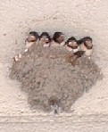

（138）ツバメ遅報
ワールドカップも無事終了した。ご存知の通り、σ(‾^‾)の予想はみごと的中した。 厳密に云うと、３位決定戦は日本vs韓国のの予想だったので、その点は外れた。しかしこれはσ（-_-）が悪いのではない。どう考えても日本が悪い.... とまぁ、そんなグチはおくとして、お待ちかね（?）のツバメ遅報（ツバメはもうとっくに巣立ったから、速報ではない....）。
我が家の駐車場にツバメが巣をつくっている。毎年４月半ばには、はるばる数千キロの旅をして戻ってくる。毎年、「戻ってくるのは去年の親なのか、あるいは巣立った子供なのか」疑問に思ってる。しかしそんな疑問に関係なく、とりあえず戻って来る。とはいうものの、今年はちと心配していた。
それは去年のこと、まだ卵を暖めている最中に、１羽、姿をみかけなくなった。最初はたまたま１羽を見かけないだけだと思ったが、どうも様子がおかしい。完全に１羽、いないようだ。最初は、いないのがオスかメスか判らなかった。しかしそのうちに居なくなったのはメスだと判った。
というのは、雛が孵るとオスメス２羽でエサを運ぶ。しかし卵を暖めるのはメスの役目。残った１羽はその辺を飛び回っているだけなので、メスがいなくなったと判った次第。どうやらメスは事故にあったか、カラスにでも襲われたらしい。オスは１週間ほど、家の周りを飛び回りながらメスを探している雰囲気であったが、そのうちにいなくなった。
（ああ、今年はダメだったか。ひょっとすると来年からは来ないかもしれないな）と、ちとがっかりした。それで今年はドキムネで待っていた。すると４月半ば、１羽のツバメが戻ってきた。
（お、戻ってきた！。しかし１羽しかいないな？。もう１羽はどこかにいるのかな？）
しかしそんな様子はさらさらない。その１羽が巣をのぞいたり、電線に留まって相手を呼ぶ雰囲気でジージー鳴いたりしながら家の周りを飛び回っている。どうやら、去年のオスらしい。（う〜ん、これでは子ができん）と、頭を抱えた。
やがて諦めたのか、そのツバメはいなくなった。すると入れ替わるように、新しいつがいが現れた。（おう、おう）と思っているとやがて卵を生んだ。ぶじ孵ったようなので、ヤレヤレと思っていると、例のオスが還ってきて一緒に子育てを始めた（エサを運び出したということ）。３羽で子育てするので、子供はみるみる大きくなった。

そして先般（といっても１ト月ほど前）、ぶじ巣立った次第。いま頃は、はるか南の空に向かって飛んでいることだろう。
来年、またおいで〜(^-^)/
前へ 次へ 目次へ